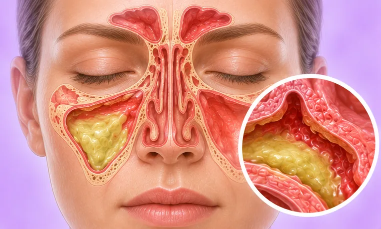

脑脊液鼻漏
包绕大脑的清亮液体从鼻子漏出
这是什么
保护大脑和脊髓的清亮液体从一个小缺口漏出，从鼻子滴出。这种情况少见，需要医生检查。
- 鼻子和颅底
- 头部受伤或手术之后
- 清亮液体滴出
- 就诊科室
- 请到医院；耳鼻喉科医生或脑外科医生
- 多发人群
- 头部受伤、鼻窦或脑部手术之后；有时找不到原因
- 传染性
- 不传染
- 病程
- 需要医生检查；有些会自行停止，有些需要处理
常见表现

嗅觉减退嗅觉丧失
其他症状
- 清亮如水的液体从一侧鼻孔滴出
- 低头或用力时流得更多
- 嘴里有咸味或金属味
- 坐起时头痛加重，躺下时减轻
为什么会这样

受伤或跌倒外伤 
手术后术后
其他原因
- 颅底骨头上有肿块或骨质较薄的地方
- 有时没有明确原因就出现
出现这些情况请先看医生
- 发热并伴有颈部僵硬、剧烈头痛或意识模糊：拨打999
- 头部受伤后鼻子流出清亮液体：立即去医院
- 抽搐、嗜睡、呕吐或一侧身体无力：拨打999
- 没有感冒或过敏，鼻子却持续流出水样液体
如果有以上情况，请先看医生，再来做调理。
本页只是一般性的健康资讯。请继续按时服用平常的药物，并继续看医生。
请继续日常治疗
请继续按医嘱服药，并按时复诊。我们的调理是温和的辅助，不能代替医疗。
日常护理
- 发现清亮液体后尽快看医生，不要拖延
- 尽量不要用力擤鼻涕、闭口打喷嚏或用力屏气
- 不要往鼻子里塞任何东西
- 休息和活动请按医生的指示
告诉理疗师
- 最近颈部受伤或手术
- 发烧或正在感染
- 心脏起搏器或金属植入物
- 癫痫或抽搐
调理师会在开始前和你确认这一项。
相关疾病
参考资料: General information based on public health sources such as Mayo Clinic, NHS, Cleveland Clinic and NCBI StatPearls.
页面更新: 2026-10-31